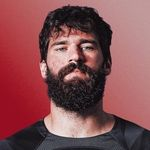
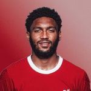
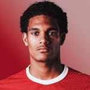
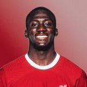
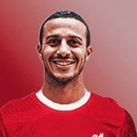
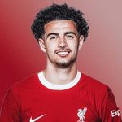

Players
Keepers
Allison Becker #🧤 Caoimhin Kelleher #62🙅 Adrian #13 🇪🇸

Defenders
Trent#66💫 Joe Gomez #2💪 Jarell Quansah #78💪 Konate #5💪 Virgil Van dijk #4© Joel Matip #32 Tsimkas #21 Robertson #26ğŸ´ó §ó ¢ó ³ó £ó ´ó ¿




Midfielders
McAllister #10a 🔥 Thiago #6✊ Szobozlai #8a 🔥 Gravenberch #38 🔥 Endo #3✊ &n Jones #17💠Bajetic #43💠Elliot #19ğŸ’


Attackers
Luiz Diaz #7a 🔥 Diego Jota #20 🤩 Darwin Nunez9️⃣🤩 Gakpo #18✊ Ben Doak #50✨ M.Salah #11👑